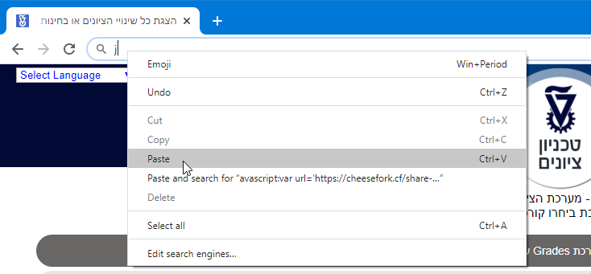
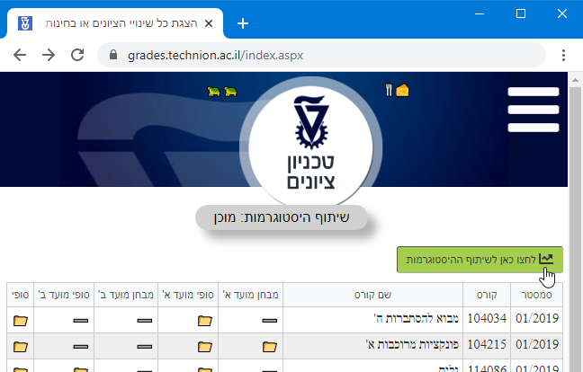
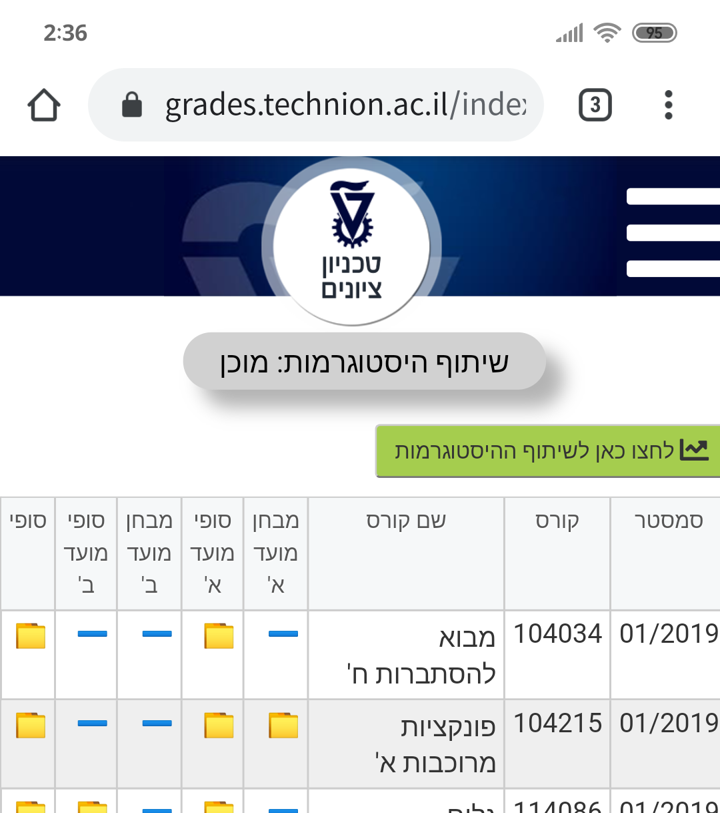

שיתוף היסטוגרמות
עקבו אחרי השלבים הבאים בשביל לשתף את ההיסטוגרמות הנגישות לכם באתר הציונים של הטכניון.
ביצוע השלבים יגרום לקוד של שיתוף ההיסטוגרמות לרוץ בסביבת אתר הציונים של הטכניון. את הקוד ניתן לראות כאן.
המידע יישלח למאגר שמאוחסן ב-GitHub כאן.
ישותף מידע כללי בלבד, כגון מספר הסטודנטים וממוצעי המבחנים. המידע ישותף רק לאחר לחיצה על כפתור השיתוף. לא ישותף מידע אישי.
את השיתוף ניתן לבצע גם מהפלאפון, לפחות דרך Chrome, וייתכן גם דרך דפדפנים אחרים שלא בדקנו.
שלבי השיתוף עם התוסף Technion Plus
- היכנסו לאתר הציונים של הטכניון והתחברו במידת הצורך.
- לחצו על כפתור שיתוף ההיסטוגרמות.
- דלגו לשלב 4 בהמשך עמוד זה.
שלבי השיתוף ללא התוסף
-
העתיקו את הקוד הבא:
- היכנסו לאתר הציונים של הטכניון והתחברו במידת הצורך.
-
עבור Chrome: הכניסו בשורת הכתובת את האות j, ולאחריה הדביקו את הקוד שהעתקתם בשלב 1. לבסוף לחצו Enter.

עבור דפדפנים אחרים: תנסו לבצע את הנ"ל. אם זה לא עובד (למשל האפשרות חסומה בגרסאות חדשות של Firefox) תפתחו את ה-Developer Tools בדפדפן שלכם, עברו ללשונית Console, הכניסו בשורת הקוד את האות j, ולאחריה הדביקו את הקוד שהעתקתם בשלב 1. לבסוף לחצו Enter.
-
המתינו לטעינת המידע, ולחצו על כפתור השיתוף הירוק לשיתוף ההיסטוגרמות.
חשוב: אל תגלשו באתר הציונים בזמן הטעינה, גם לא בחלון אחר של הדפדפן.
  - המתינו להשלמת השיתוף. גם בזמן השיתוף, אל תגלשו באתר הציונים, גם לא בחלון אחר של הדפדפן.